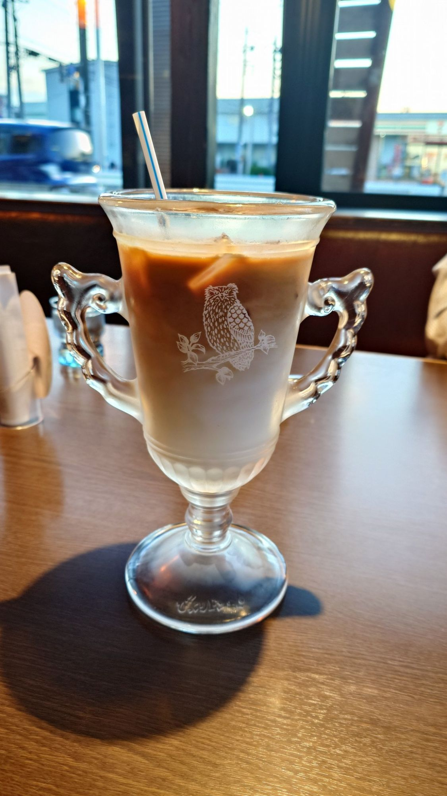

ミルク感
グラスの下にたっぷり見える、白いミルクの層。ミルクのやさしさが前に出る味わいです。
びっくりドンキーのドリンクメニュー
アイスカフェラテ びっくりサイズ
両側に持ち手のついた脚付きグラスに、
ミルク感たっぷりのアイスカフェラテをなみなみと。
運ばれてきた瞬間、思わず声が出る一杯です。

01 SURPRISE
テーブルに届いた瞬間、目の前のグラスに二度見。
「これ、ひとり分？」と笑ってしまうサイズ感こそ、この一杯のいちばんの主役です。
脚付きの大きなグラスが、どーんと登場。テーブルの景色が変わります。
左右に持ち手つき。つい両手を添えたくなる、たのもしい佇まい。
たっぷりあるから、食事の最初から食後のおしゃべりまでおともに。
※ 容量・価格・カロリーは店舗や時期により異なります【要確認】。最新の情報は公式サイト・店頭メニューをご確認ください。
02 TASTE
上は深いコーヒー色、下はまっ白なミルク色。
グラス越しのグラデーションが、ミルク感のあかしです。混ぜるほどまろやかに、最後のひと口までごくごく飲める軽やかさ。
グラスの下にたっぷり見える、白いミルクの層。ミルクのやさしさが前に出る味わいです。
氷がカランと浮かぶ、きりっと冷たい一杯。グラスの表面がうっすら曇るほど。
ストローでそのままどうぞ。甘さはお好みで調整を（ガムシロップ等の提供は店舗により異なります）。
※ 見た目からのイメージです。感じ方には個人差があります。
03 GLASS
飲みものだけじゃない。グラスそのものが、ちょっとした見どころです。
写真の番号にふれると、ポイントが光ります。
くるんとした装飾の持ち手が左右に。トロフィーみたいな存在感。
枝にとまったフクロウが、カフェラテ色を背景に白く浮かびます。
どっしりした台座と脚付きのフォルム。置いた姿まで絵になります。
白地に青のストライプ。クラシックな喫茶の気分を添えてくれます。
04 HOW TO ENJOY
届いたらまず写真。フクロウが正面にくる角度がおすすめです。
ボリュームのある食事にも負けない量。最初から最後まで寄り添います。
なくならないから、話が弾む。友だちや家族との長居のおともに。
持ち手を両手で持って、えいっと乾杯。グラスは重いのでゆっくりと。
05 Q&A
容量は【要確認】です。店舗や時期により異なる場合がありますので、正確な内容は公式サイトまたは店頭でご確認ください。
価格は【要確認】です。店舗により異なりますので、ご利用の店舗のメニューをご確認ください。
取り扱いメニューやグラスの種類は店舗・時期により異なる場合があります。来店前に公式サイトの店舗情報をご確認いただくと安心です。
写真は実際に提供された一例です。グラスのデザインは店舗や時期により異なる場合があります【要確認】。
栄養成分・アレルギー情報は公式サイトに掲載の最新情報をご確認ください。このページでは数値を掲載していません。